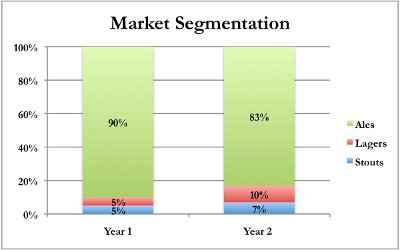
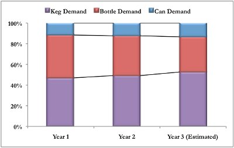

As part of your annual production planning process, you need to look at how your brewery’s performance last year fared relative your expectations. If there were wide variances between your forecast and your actual results, were they related to a particular category, packaging type, or something else? To better hone the accuracy of your forecast this year, you decide to focus on two things: your estimated market share versus your competition and changes in market segmentation. With respect to the market share you captured in your first year of operations, being a new competitor in the market had as many benefits as it did challenges. From a competitive standpoint, other brewers had not anticipated your entrance into the market and had no defensive tactics prepared to market their products against yours. From a consumer’s standpoint, it is always exciting to try something new. However, the future will be much more challenging: competitors, many of whom are larger and have more resources, are ready to compete against you directly and the novelty of your products for consumers is probably starting to wane. Because of these factors, it will be more challenging to capture additional market share in the coming years. However, if you accurately forecast production and your packaging decisions effectively match consumer preference, it might be possible to increase your market share by 30 – 50% over last year since you are a small, fast-growing brewery.
You recently purchased a new research report, which gave you some good information about consumer trends over the last two years. The following chart shows that lagers and stouts accounted for 17% of consumer demand last year, which was a 70% increase over the previous year. The report gave a number of potential reasons for the significant decrease in ale consumption, including a growing change in consumer preferences, a series of bad weather that ruined the crops for ale ingredients, and a significant merger between the two largest ale manufacturers that may have led to an interruption in supply. It is unclear how these factors might influence next year’s demand, or which factor accounted for the bulk of the change. This report also highlighted the fact that the citizens of Megapolis are starting to consume more beer and drinking less wine. This has led to an increase in annual per capita consumption of beer from 80 liters to 82 liters. With a population of 400,000, this would lead to total forecasted demand for beer of around 32.8 million liters in the coming year.

You have begun to notice certain changes around Megapolis, including the construction of many new houses and increased traffic around the parts of town where the technology companies are located. This is usually a sign that developers are expecting an influx of new residents. As people come to tour the area, they often stop at restaurants and bars for a break. You believe that this might lead to increased consumption of kegs to meet the growing consumer demand. Based on your internal forecasting, you feel the following chart might be a good representation of consumer packaging preference for the coming year. However, there may be slight differences between ales and lagers. Based on this data, you need to decide how you will divide your beer output between kegs, bottles, and/or cans.
